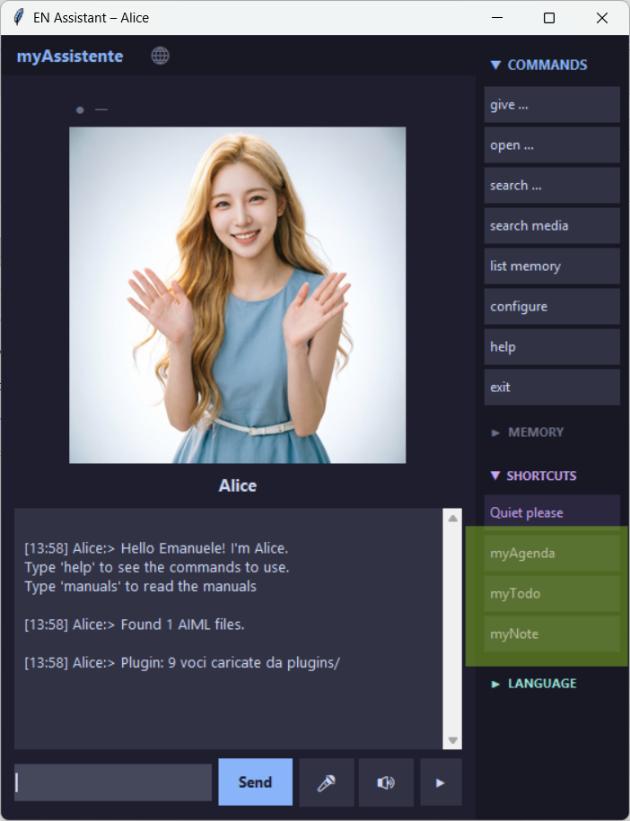

(2) User Manual
- Purpose: This manual guides you through the personal configuration of myAssistente.
- Prerequisites: myAssistente5 installed.
- References: (1) Installation Manual.
Do you still need to install myAssistente? The ready‑to‑use packages for Windows and Linux are available: just download, extract the ZIP file, and click the executable.
For the Python version and for creating macOS packages, refer to the (1) Installation Manual.
I am constantly looking for new useful ideas to implement — any suggestion is welcome.
manuals and myAssistente will open the page with the documentation index.
Configure user name and assistant name
At the beginning, the assistant is named Assistant and the user is named User.
To change these values, type or press the microphone and say:
[03:19] user:> configure short [03:19] Assistant:> Assistant name setup: nome_avatar current value = 'Assistant' Enter new value or leave empty to cancel [03:19] user:> Alice [03:19] Alice:> Parameter 'nome_avatar' updated to 'Alice' [03:19] Alice:> User name setup: nome_utente current value = 'user' Enter new value or leave empty to cancel [03:19] user:> Emanuele [03:19] Alice:> Parameter 'nome_utente' updated to 'Emanuele' [03:19] Alice:> Configuration completed. [03:20] Emanuele:>
Remember and learn
To make the assistant remember a piece of data, use the commands remember (for a single entry) or learn (for multiple entries). Type or say:
03:29] Emanuele:> remember [03:29] Alice:> What should I remember? Tell me the name: [03:29] Emanuele:> IMPORTANT [03:29] Alice:> Tell me the data for 'IMPORTANT': [03:30] Emanuele:> must remember 348 966 111 [03:30] Alice:> Done! 'IMPORTANT' saved.
To retrieve the data later, simply ask: :> give important (or find important).
Quick command to store data without repeating the name:
[20:53] Emanuele:> remember phone Marta 348 966 111 [20:52] Alice:> Done! 'phone' saved.
The first word (in the example phone) will be the name to remember, the next the data.
If you use learn or acquire to store multiple pieces of data in sequence:
[03:33] Emanuele:> learn [03:33] Alice:> Guided input. Type 'skip' for optional fields, 'end' to cancel. Name (mandatory): [03:33] Emanuele:> Tax code [03:33] Alice:> Alias (optional — 'skip' to skip): [03:34] Emanuele:> skip [03:34] Alice:> Subject (optional — 'skip' to use your name): [03:34] Emanuele:> Emanuele [03:34] Alice:> Data to memorize (mandatory): [03:34] Emanuele:> CDCFSC65T30... [03:34] Alice:> Tags (optional — 'skip' to skip): [03:34] Emanuele:> tax agency [03:34] Alice:> Avatar (optional — 'skip' for 'smiling'): [03:34] Emanuele:> triste [03:34] Alice:> Saved! 'Tax code'. Another item? (yes / no) [03:34] Emanuele:> yes [03:33] Alice:> Guided input. Type 'skip' for optional fields, 'end' to cancel. Name (mandatory): [03:33] Emanuele:> Tax code [03:33] Alice:> Alias (optional — 'skip' to skip): [03:34] Emanuele:> skip [03:34] Alice:> Subject (optional — 'skip' to use your name): [03:34] Emanuele:> Andrea [03:34] Alice:> Data to memorize (mandatory): [03:34] Emanuele:> CDFSC65T30... [03:34] Alice:> Tags (optional — 'skip' to skip): [03:34] Emanuele:> tax agency [03:34] Alice:> Avatar (optional — 'skip' for 'smiling'): [03:34] Emanuele:> triste [03:34] Alice:> Saved! 'Tax code'. Another item? (yes / no) [03:34] Emanuele:> no [03:34] Alice:> Input completed.
In this example, I stored two items: one for Emanuele and one for Andrea.
To make the assistant open a website link, type or say:
[03:40] Emanuele:> remember [03:40] Alice:> What should I remember? Tell me the name: [03:40] Emanuele:> Website [03:40] Alice:> Tell me the data for 'Website': [03:40] Emanuele:> https://www.steppa.net/cassani/ [03:40] Alice:> Done! 'Website' saved. [21:30] Emanuele:> open the Website Alice:> Opening now: https://www.steppa.net/cassani/
To make the assistant open a file, a folder:
[03:41] Emanuele:> remember [03:41] Alice:> What should I remember? Tell me the name: [03:41] Emanuele:> File link [03:41] Alice:> Tell me the data for 'File link': [03:41] Emanuele:> C:\Users\emanuele\Desktop\documento.rtf [03:41] Alice:> Done! 'File link' saved. [21:30] Emanuele:> open the file link Alice:> Opening: C:\Users\emanuele\Desktop\documento.rtf
The file will be opened with the program associated by your operating system.
Note: backslashes \ are doubled in memory due to JSON syntax requirements, but the assistant will handle them automatically.
You can also train the assistant to open any program:
Example to store: C:\Program Files (x86)\Microsoft\Edge\Application\msedge.exe
Any folder:
Example: C:\Users\emanuele\Desktop\
Or system functions.
Example for Windows users: store control to open the Control Panel, or cmd.exe to open the command prompt.
Try anything that comes to mind — it will probably work.
You can perform the same configurations by editing the
_memory.json file with a simple text editor such as Notepad.See (4) Configuration Manual.
Remember images
The commands remember image or store image are used to save an image inside myAssistente’s data.
[03:44] Emanuele:> remember questa immagine --- a window will be open, to select an image--- [03:44] Alice:> Name for the image? [03:44] Emanuele:> icon [03:44] Alice:> Description (tag)? [03:44] Emanuele:> used for myAssistente [03:44] Alice:> Image 'icon' saved.
The file will be stored inside the _dati/asset/ folder, and you can retrieve it with the command open [name].
In the example above, open icon will launch the program associated with that file type.
Modify
Use the command modify or change to edit a piece of data stored in memory.
[03:54] Emanuele:> change phone [03:54] Alice:> Item found: nome: phone soggetto: Emanuele Marta 348 966 111 [avatar: sorridente] Which field? [03:55] Emanuele:> dati [03:55] Alice:> Enter new value for 'dati': [03:55] Emanuele:> New 378 314 432 [03:55] Alice:> Modified! 'dati' = New 378 314 432
Copy
Use the command copy to copy the data to the clipboard so you can paste it wherever you need.
[03:57] Emanuele:> copy tax code [03:57] Alice:> Copied: CDFSC65T30...
Fixed responses
By editing the parameters below inside the How to retrieve stored data and how to open links to folders, files, and websites. We have already mentioned the commands To display the entire memory content, use the command To delete a piece of data from memory, use the command _dati/config.json file with a simple text editor (such as Notepad), you can also preconfigure optional fixed responses for specific user inputs.
See (4) Configuration Manual./p>
Retrieve data
Search
give and open.
With search, you will find all names, aliases, and data containing the requested word.
[15:19] Emanuele:> search tax code
[15:19] Alice:> Found 2 results for 'tax code':
[1] nome: Tax code
alias:
soggetto: Emanuele
CDFSC65T30...
tag: revenue agency
[avatar: sad]
[2] nome: Tax code
alias:
soggetto: Andrea
NDRFCL89T30...
tag: revenue agency
[avatar: sad]
List
list or show.
When the list is too long, you can silence the assistant with the command ok (shortcut button “Got it” if configured).
[15:26] Emanuele:> list
[15:26] Alice:> I have 3 item(s) in memory:
1. Tax code — Emanuele
2. Tax code — Andrea
3. Website — Emanuele
...
Delete
delete followed by the name of the entry to remove.
If you don’t remember the exact name, you can use list first.
[04:02] Emanuele:> delete icon
[04:02] Alice:> Do you want to delete:
nome: icon
alias: 1
soggetto: Emanuele
D:\ProgettiPython\progetto-assistente\sorgente\distWIN\myAssistente\_dati\asset\icon.png
tag: used for myAssistente
[avatar: magazziniere]
Type 'yes' to confirm.
[04:02] Emanuele:> yes
[04:02] Alice:> 'icon' deleted.
The assistant works with fixed commands.
If you have a memory entry named mail whose data contains the executable link to Outlook, asking :> Open the mail link will not work, because the assistant expects open mail.
To enhance its understanding capabilities, I integrated compatibility with the AIML language.
See (7) AIML Manual.
MyAgenda, myNote, MyTodo
The assistant exchanges information with the integrated miniApps MyAgenda, myNote, MyTodo.

By clicking the buttons on the right in the
SHORTCUT section, the tool window opens.The mini apps guarantee 100% privacy and the information remains in the local browser memory. To share it with myAssistant, click the
Save for myAssistant button. The first time, a window will open to select where to save the information.
./myAssistente/_dati/plugins/
Documentation
The available documentation for myAssistente5.
The documents are also available in the
/DOCS folder of the repository.
For any missing documentation, refer to the English or Italian documentation from previous releases.
- (1) Installation Manual — installing the program for Windows, Linux, or multiplatform
- (2) User Manual — myAssistente user interface
- (3) Plugin Manual — myAgenda, myNote, myTodo
- (4) Configuration Manual —
config.jsonfile, advanced settings - (5) Memory Manual —
memory.jsonfile, advanced settings - (6) Language Manual —
lang[].jsonfiles, advanced customization - (7) AIML Manual —
aiml/[LANG]/[filename].aimlfiles - (8) Advanced AIML Manual —
aiml/IT/testConiglio.aimlfile